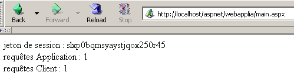
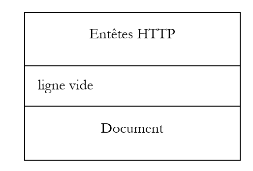
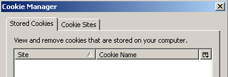
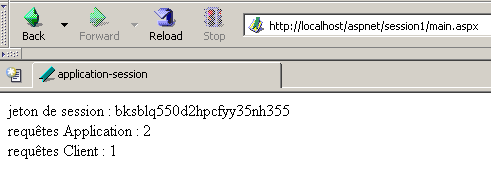
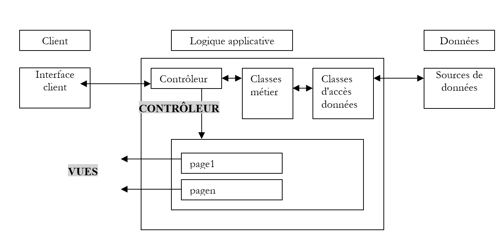
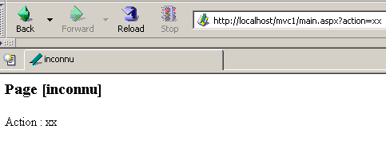
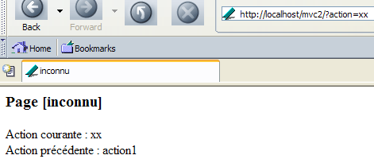

4. Les fondamentaux du développement ASP.NET
4.1. La notion d'application web ASP.NET
4.1.1. Introduction
Une application web est une application regroupant divers documents (HTML, code .NET, images, sons, ...). Ces documents doivent être sous une même racine qu'on appelle la racine de l'application web. A cette racine est associé un chemin virtuel du serveur web. Nous avons rencontré la notion de dossier virtuel pour le serveur web Cassini. Cette notion existe également pour le serveur web IIS. Une différence importante entre les deux serveurs est qu'à un moment donné, IIS peut avoir un nombre quelconque de dossiers virtuels alors que le serveur web Cassini n'en a qu'une, celle qui a été spécifiée à son lancement. Cela signifie que le serveur IIS peut servir plusieurs applications web simultanément alors que le serveur Cassini n'en sert qu'une à la fois. Dans les exemples précédents, le serveur Cassini était toujours lancé avec les paramètres (<webroot>,/aspnet) qui associaient le dossier virtuel /aspnet au dossier physique <webroot>. Le serveur web servait donc toujours la même application web. Cela ne nous a pas empêchés d'écrire et de tester des pages différentes et indépendantes à l'intérieur de cette unique application web. Chaque application web a des ressources qui lui sont propres et qui se trouvent sous sa racine physique <webroot> :
- un dossier [bin] dans lequel on peut placer des classes pré-compilées
- un fichier [global.asax] qui permet de d'initialiser l'application web dans son ensemble ainsi que l'environnement d'exécution de chacun de ses utilisateurs
- un fichier [web.config] qui permet de paramétrer le fonctionnement de l'application
- un fichier [default.aspx] qui joue le rôle de porte d'entrée de l'application
- ...
Dès qu'une application utilise l'une de ces trois ressources, elle a besoin d'un chemin physique et virtuel qui lui soient propres. Il n'y a en effet aucune raison pour que deux applications web différentes soient configurées de la même façon. Nos exemples précédents ont pu tous être placés dans la même application (<webroot>,/aspnet) parce qu'ils n'utilisaient aucune des ressources précédentes.
Revenons sur l'architecture MVC préconisée en début de ce chapitre pour le développement d'une application web :

L'application web est formée des fichiers de classe (contrôleur, classes métier, classes d'accès aux données) et des fichiers de présentation (documents HTML, images, sons, feuilles de style,..). L'ensemble de ces fichiers sera placé sous une même racine que nous appellerons parfois <application-path>. Cette racine sera associée à un chemin virtuel <application-vpath>. L'association entre ce chemin virtuel et chemin physique se fait par configuration du serveur web. On a vu que pour le serveur Cassini, cette association se faisait au lancement du serveur. Par exemple dans une fenêtre dos, on lancerait Cassini par :
Dans le dossier <application-path>, on trouvera selon nos besoins :
- le dossier [bin] pour y placer des classes pré-compilées (dll)
- le fichier [global.asax] lorsque nous aurons besoin de faire des initialisation soit lors de l'initialisation de l'application, soit lors de celle d'une session utilisateur
- le fichier [web.config] lorsque nous aurons besoin de paramétrer l'application
- le fichier [default.aspx] lorsque nous aurons besoin d'une page par défaut dans l'application
Afin de respecter ce concept d'application web, les exemples à venir seront tous placés dans un dossier <application-path> propre à l'application auquel sera associé un dossier virtuel <application-vpath>, le serveur Cassini étant lancé de façon à lier ces deux paramètres.
4.1.2. Configurer une application web
Si <application-path> est la racine d'une application ASP.NET, on peut utiliser le fichier <application-path>\web.config pour configurer celle-ci. Ce fichier est au format XML. Voici un exemple :
<?xml version="1.0" encoding="UTF-8" ?>
<configuration>
<appSettings>
<add key="nom" value="tintin"/>
<add key="age" value="27"/>
</appSettings>
</configuration>
On prêtera attention au fait que les balises XML sont sensibles à la casse. Toutes les informations de configuration doivent être entre les balises <configuration> et </configuration>. Il existe de nombreuses sections de configuration utilisables. Nous n'en présentons qu'une ici, la section <appSettings> qui permet d'initialiser des données avec la balise <add>. La syntaxe de cette balise est la suivante :
Lorsque le serveur Web lance une application, il regarde si dans <application-path> il y a un fichier appelé web.config. Si oui, il le lit et mémorise ses informations dans un objet de type [ConfigurationSettings] qui sera disponible à toutes les pages de l'application tant que celle-ci est active. La classe [ConfigurationSettings] a une méthode statique [AppSettings] :

Pour obtenir la valeur d'une clé C du fichier de configuration, on écrire ConfigurationSettings.AppSettings("C"). On obtient une chaîne de caractères. Pour exploiter le fichier de configuration précédent, créons une page [default.aspx]. Le code VB du fichier [default.aspx.vb] sera le suivant :
Imports System.Configuration
Public Class _default
Inherits System.Web.UI.Page
Protected nom As String
Protected age As String
Private Sub Page_Load(ByVal sender As System.Object, ByVal e As System.EventArgs) Handles MyBase.Load
'on récupère les informations de configuration
nom = ConfigurationSettings.AppSettings("nom")
age = ConfigurationSettings.AppSettings("age")
End Sub
End Class
On voit qu'au chargement de la page, les valeurs des paramètres de configuration [nom] et [age] sont récupérés. Elles vont être affichées par le code de présentation de [default.aspx] :
<%@ Page src="default.aspx.vb" Language="vb" AutoEventWireup="false" Inherits="_default" %>
<html>
<head>
<title>Configuration</title>
</head>
<body>
Nom :
<% =nom %><br/>
Age :
<% =age %><br/>
</body>
</html>
Pour le test, on met les fichiers [web.config], [default.aspx] et [default.aspx.vb] dans le même dossier :
D:\data\devel\aspnet\poly\chap2\config1>dir
30/03/2004 15:06 418 default.aspx.vb
30/03/2004 14:57 236 default.aspx
30/03/2004 14:53 186 web.config
Soit <application-path> le dossier où se trouvent les trois fichiers de l'application. Le serveur Cassini est lancé avec les paramètres (<application-path>,/aspnet/config1). Nous demandons l'URL [http://localhost/aspnet/config1]. Comme [config1] est un dossier, le serveur web va chercher un fichier [default.aspx] dedans et l'afficher s'il le trouve. Ici, il va le trouver :

4.1.3. Application, Session, Contexte
4.1.3.1. Le fichier global.asax
Le code du fichier [global.asax] est toujours exécuté avant que la page demandée par la requête courante ne soit chargée. Il doit être situé dans la racine <application-path> de l'application. S'il existe, le fichier [global.asax] est utilisé à divers moments par le serveur web :
- lorsque l'application web démarre ou se termine
- lorsqu'une session utilisateur démarre ou se termine
- lorsqu'une requête utilisateur démarre
Comme pour les pages .aspx, le fichier [global.asax] peut être écrit de différentes façons et en particulier en séparant code VB dans une classe contrôleur et code de présentation. C'est le choix fait par défaut par l'outil Visual Studio et nous allons faire ici de même. Il n'y a normalement aucune présentation à faire, ce rôle étant dévolu aux pages .aspx. Le contenu du fichier [global.asax] est alors réduit à une directive référençant le fichier contenant le code du contrôleur :
<%@ Application src="Global.asax.vb" Inherits="Global" %>
On remarquera que la directive n'est plus [Page] mais [Application]. Le code du contrôleur [global.asax.vb] associé et généré par l'outil Visual studio est le suivant :
Imports System
Imports System.Web
Imports System.Web.SessionState
Public Class Global
Inherits System.Web.HttpApplication
Sub Application_Start(ByVal sender As Object, ByVal e As EventArgs)
' Se déclenche lorsque l'application est démarrée
End Sub
Sub Session_Start(ByVal sender As Object, ByVal e As EventArgs)
' Se déclenche lorsque la session est démarrée
End Sub
Sub Application_BeginRequest(ByVal sender As Object, ByVal e As EventArgs)
' Se déclenche au début de chaque demande
End Sub
Sub Application_AuthenticateRequest(ByVal sender As Object, ByVal e As EventArgs)
' Se déclenche lors d'une tentative d'authentification de l'utilisation
End Sub
Sub Application_Error(ByVal sender As Object, ByVal e As EventArgs)
' Se déclenche lorsqu'une erreur se produit
End Sub
Sub Session_End(ByVal sender As Object, ByVal e As EventArgs)
' Se déclenche lorsque la session se termine
End Sub
Sub Application_End(ByVal sender As Object, ByVal e As EventArgs)
' Se déclenche lorsque l'application se termine
End Sub
End Class
On notera que la classe du contrôleur dérive de la classe [HttpApplication]. Dans la vie d'une application, il existe plusieurs événements importants. Ceux-ci sont gérés par des procédures dont le squelette est donné ci-dessus.
- [Application_Start] : rappelons qu'une application web est "enfermée" dans un chemin virtuel. L'application démarre dès qu'une page située dans ce chemin virtuel est demandée par un client. La procédure [Application_Start] est alors exécutée. Ce sera l'unique fois. On fera dans cette procédure, toute initialisation utile à l'application, comme par exemple créer des objets dont la durée de vie est celle de l'application.
- [Application-End] : est exécutée quand l'application est terminée. A toute application est associé un délai d'inactivité, configurable dans [web.config], au bout duquel l'application est considérée comme terminée. C'est donc le serveur web qui prend cette décision en fonction du paramétrage de l'application. Le délai d'inactivité d'une application est défini comme le temps pendant lequel aucun client n'a fait une demande pour une ressource de l'application.
- [Session-Start]/[Session_End] : A tout client est attachée une session sauf si l'application est configurée comme n'ayant pas de session. Un client n'est pas un utilisateur devant son écran. Si celui-ci a ouvert 2 navigateurs pour interroger l'application, il représente deux clients. Un client est caractérisé par un jeton de session qu'il doit joindre à chacune de ses demandes. Ce jeton de session est une suite de caractères générée aléatoirement par le serveur web et unique. Deux clients ne peuvent avoir le même jeton de session. Ce jeton va suivre le client de la façon suivante :
- le client qui fait sa première demande n'envoie pas de jeton de session. Le serveur web reconnaît ce fait et lui en attribue un. C'est le début de la session et la procédure [Session_Start] est exécutée. Ce sera l'unique fois.
- le client fait ses demandes suivantes en envoyant le jeton qui l'identifie. Cela va permettre au serveur web de retrouver des informations liées à ce jeton. Cela va permettre un suivi entre les différentes demandes du client.
- l'application peut mettre à la disposition d'un client, un formulaire de fin de session. Dans ce cas, c'est le client qui demande lui-même la fin de sa session. La procédure [Session_End] sera exécutée. Ce sera l'unique fois.
- le client peut ne jamais demander lui-même la fin de sa session. Dans ce cas, après un certain délai d'inactivité de la session, lui-aussi configurable par [web.config], la session sera terminée par le serveur web. La procédure [Session_End] sera alors exécutée.
- [Application_BeginRequest] : cette procédure est exécutée dès qu'une nouvelle demande arrive. Elle est donc exécutée à chaque requête d'un client quelconque. C'est un bon endroit pour examiner la requête avant de la transmettre à la page qui a été demandée. On peut même prendre la décision de la réorienter vers une autre page.
- [Application_Error] : est exécutée à chaque fois que se produit une erreur non gérée explicitement par le code du contrôleur [global.asax.vb]. On peut ici, réorienter la demande du client vers une page expliquant la cause de l'erreur.
Si aucun de ces événements ne doit être géré, alors le fichier [global.asax] peut être ignoré. C'est ce qui a été fait avec les premiers exemples de ce chapitre.
4.1.3.2. Exemple 1
Développons une application pour mieux appréhender les trois moments que sont : le démarrage de l'application, de la session, d'une demande client. Le fichier [global.asax] sera le suivant :
Le fichier [global.asax.vb] associé sera le suivant :
Imports System
Imports System.Web
Imports System.Web.SessionState
Public Class global
Inherits System.Web.HttpApplication
Sub Application_Start(ByVal sender As Object, ByVal e As EventArgs)
' Se déclenche lorsque l'application est démarrée
' on note l'heure
Dim startApplication As String = Date.Now.ToString("T")
' on la range dans le contexte de l'application
Application.Item("startApplication") = startApplication
End Sub
Sub Session_Start(ByVal sender As Object, ByVal e As EventArgs)
' Se déclenche lorsque la session est démarrée
' on note l'heure
Dim startSession As String = Date.Now.ToString("T")
' on la met dans la session
Session.Item("startSession") = startSession
End Sub
Sub Application_BeginRequest(ByVal sender As Object, ByVal e As EventArgs)
' on note l'heure
Dim startRequest As String = Date.Now.ToString("T")
' on la met dans la session
Context.Items("startRequest") = startRequest
End Sub
End Class
Les points importants du code sont les suivants :
- le serveur web rend disponible à la classe [HttpApplication] de [global.asax.vb] un certain nombre d'objets :
- Application de type [HttpApplicationState] - représente l'application web - donne accès à un dictionnaire d'objets [Application.Item] accessible à tous les clients de l'application - permet le partage d'informations entre différents clients - l'accès simultané de plusieurs clients à une même donnée en lecture/écriture nécessite une synchronisation des clients.
- Session de type [HttpSessionState] - représente un client particulier - donne accès à un dictionnaire d'objets [Session.Item] accessible à toutes les requêtes de ce client - va permettre de mémoriser des informations sur un client qu'on va pouvoir retrouver au fil des requêtes de celui-ci.
- Request de type [HttpRequest] - représente la requête HTTP courante du client
- Response de type [HttpResponse] - représente la réponse HTTP en cours de construction du serveur au client
- Server de type [HttpServerUtility] - offre des méthodes utilitaires notamment pour transférer la requête à une autre page que celle prévue initialement.
- Context de type [HttpContext] - cet objet est recréé à chaque nouvelle requête mais est partagé par toutes les pages qui participent au traitement de la requête - permet de transmettre des informations de page en page lors du traitement d'une requête grâce à son dictionnaire Items.
- la procédure [Application_Start] note le début de l'application dans une variable stockée dans un dictionnaire accessible au niveau application
- la procédure [Session_Start] note le début de la session dans une variable stockée dans un dictionnaire accessible au niveau session
- la procédure [Application_BeginRequest] note le début de la requête dans une variable stockée dans un dictionnaire accessible au niveau requête (c.a.d disponible pendant tout le temps de son traitement mais perdue à la fin de celui-ci)
La page cible sera la page [main.aspx] suivante :
<%@ Page src="main.aspx.vb" Language="vb" AutoEventWireup="false" Inherits="main" %>
<html>
<head>
<title>global.asax</title>
</head>
<body>
jeton de session :
<% =jeton %><br/>
début Application :
<% =startApplication %><br/>
début Session :
<% =startSession %><br/>
début Requête :
<% =startRequest %><br/>
</body>
</html>
Cette page de présentation affiche des valeurs calculées par son contrôleur [main.aspx.vb] :
Public Class main
Inherits System.Web.UI.Page
Protected startApplication As String
Protected startSession As String
Protected startRequest As String
Protected jeton as String
Private Sub Page_Load(ByVal sender As System.Object, ByVal e As System.EventArgs) Handles MyBase.Load
' on récupère les infos de l'application et de la session
jeton=Session.SessionId
startApplication = Application.Item("startApplication").ToString
startSession = Session.Item("startSession").ToString
startRequest = Context.Items("startRequest").ToString
End Sub
End Class
Le contrôleur se contente de récupérer les trois informations placées respectivement dans l'application, la session, le contexte par [global.asax.vb].
Nous testons l'application de la façon suivante :
- les fichiers sont rassemblés dans un même dossier <application-path>

- le serveur Cassini est lancé avec les paramètres (<application-path>,/aspnet/globalasax1)
- un premier client demande l'url [http://localhost/aspnet/globalasax1/main.aspx] et obtient le résultat suivant :

- le même client fait une nouvelle requête (option Reload du navigateur) :

On peut constater que seule l'heure de la requête a changé. Ceci montre deux choses :
- les procédures [Application_Start] et [Session_Start] de [global.asax] n'ont pas été exécutées lors de la seconde requête.
- les objets [Application] et [Session] où étaient stockées les heures de début de l'application et de la session sont encore disponibles pour la seconde requête.
- on lance un second navigateur pour créer un second client et nous redemandons la même url :

Cette fois-ci, nous voyons que l'heure de la session a changé. Le deuxième navigateur, bien que sur la même machine, a été considéré comme un second client et une nouvelle session a été créée pour lui. On peut constater que les deux clients n'ont pas le même jeton de session. L'heure de début de l'application n'a pas changé, ce qui signifie que :
- la procédure [Application_Start] de [global.asax.vb] n'a pas été exécutée
- l'objet [Application] où a été stockée l'heure de début de l'application est accessible au second client. C'est donc dans cet objet qu'il faut stocker les informations que doivent se partager les différents clients de l'application, l'objet [Session] lui, servant à stocker des informations que doivent se partager les requêtes d'un même client.
4.1.3.3. Une vue d'ensemble
Avec ce que nous avons appris jusqu'à maintenant, nous sommes en mesure de faire un premier schéma explicatif du fonctionnement d'un serveur web et des application web qu'il sert :

Le schéma précédent nous montre un serveur servant deux applications notées A et B, chacune avec deux clients. Un serveur web est capable de servir plusieurs applications web simultanément. Celles-ci sont totalement indépendantes les unes des autres. Nous raisonnerons sur l'application A. Le traitement d'une requête du client-1A à l'application A va se dérouler de la façon suivante :
- le client 1A demande au serveur web une ressource qui appartient au domaine de l'application A. Cela veut dire qu'il demande une URL de la forme [http://machine:port/VA/ressource] où VA est le chemin virtuel de l'application A.
- si le serveur web détecte que c'est la 1ère demande d'une ressource de l'application A, il déclenche l'événement [Application_Start] du fichier [global.asax] de l'application A. Un objet [ApplicationA] de type [HttpApplicationState] va être construit. Les différents codes de l'application stockeront dans cet objet des données de portée [Application], c.a.d. des données concernant tous les utilisateurs. L'objet [ApplicationA] va exister jusqu'à ce que le serveur web décharge l'application A.
- si le serveur web détecte de plus qu'il a affaire à un nouveau client de l'application A, il va déclencher l'événement [Session_Start] du fichier [global.asax] de l'application A. Un objet [Session-1A] de type [HttpSessionState] va être construit. Cet objet va permettre à l'application A de stocker des objets de portée [Session], c.a.d. des objets appartenant à un client précis. L'objet [Session-1A] va exister tant que le client 1A fera des requêtes. Il va permettre un suivi de ce client. Le serveur web détecte qu'il a affaire à un nouveau client dans deux cas :
- le client ne lui a pas envoyé de jeton de session dans les entêtes HTTP de sa requête
- le client lui a envoyé un jeton de session qui n'existe pas (mauvais fonctionnement du client ou tentative de piratage) ou qui n'existe plus. Un jeton de session expire en effet au bout d'un certain délai d'inactivité du client (20 mn par défaut avec IIS). Ce délai est programmable.
- dans tous les cas, le serveur web va déclencher l'événement [Application_BeginRequest] du fichier [global.asax]. Cet événement démarre le traitement d'une requête client. Il est fréquent de ne pas traiter cet événement et de passer la main à la page demandée par le client qui elle traitera la requête. On peut aussi utiliser cet événement pour analyser la requête, la traiter et décider de la page qui doit être envoyée en réponse. Nous utiliserons cette technique pour mettre en place une application respectant l'architecture MVC dont nous avons parlé.
- une fois le filtre de [global.asax] passé, la requête du client est passée à une page .aspx qui va traiter la requête. Nous verrons ultérieurement qu'il est possible de passer la requête au travers d'un filtre de plusieurs pages. La dernière sera chargée d'envoyer la réponse au client. Les pages peuvent ajouter à la requête initiale du client, des informations qu'elles ont calculées. Elles peuvent stocker ces informations dans la collection Context.Items. En effet, toutes les pages engagées dans le traitement de la requête d'un client ont accès à ce réservoir de données.
- le code des différentes pages a accès aux réservoirs de données que sont les objets [ApplicationA], [Session-1A], ... Il faut se souvenir que le serveur web traite simultanément plusieurs clients pour l'application A. Tous ces clients ont accès à l'objet [Application A]. S'ils doivent modifier des données dans cet objet, il y a un travail de synchronisation des clients à faire. Chaque client XA a de plus accès au réservoir de données [Session-XA]. Celui-ci lui étant réservé, il n'y a pas là de synchronisation à faire.
- le serveur web sert plusieurs applications web simultanément. Il n'y a aucune interférence entre les clients de ces différentes applications.
De ces explications, on retiendra les points suivants :
- à un moment donné, un serveur web sert de multiples clients de façon simultanée. Cela signifie qu'il n'attend pas la fin d'une requête pour en traiter une autre. A un temps T, il y a donc plusieurs requêtes en cours de traitement appartenant à des clients différents pour des applications différentes. On appelle parfois threads d'exécution, les codes de traitement qui se déroulent en même temps au sein du serveur web.
- les threads d'exécution des clients d'applications web différentes n'interfèrent pas entre-eux. Il y a étanchéité.
- les threads d'exécution des clients d'une même application peuvent avoir à partager des données :
- les threads d'exécution des requêtes de deux clients différents (pas le même jeton de session) peuvent partager des données au moyen de l'objet [Application].
- les threads d'exécution des requêtes successives d'un même client peuvent partager des données au moyen de l'objet [Session].
- les threads d'exécution des pages successives traitant une même requête d'un client donné peuvent partager des données au moyen de l'objet [Context].
4.1.3.4. Exemple 2
Développons un nouvel exemple mettant en lumière ce qui vient d'être vu. Nous rassemblons dans le même dossier les fichiers suivants :
[global.asax]
[global.asax.vb]
Imports System
Imports System.Web
Imports System.Web.SessionState
Public Class global
Inherits System.Web.HttpApplication
Sub Application_Start(ByVal sender As Object, ByVal e As EventArgs)
' Se déclenche lorsque l'application est démarrée
' init compteur de clients
Application.Item("nbRequêtes") = 0
End Sub
Sub Session_Start(ByVal sender As Object, ByVal e As EventArgs)
' Se déclenche lorsque la session est démarrée
' init compteur de requêtes
Session.Item("nbRequêtes") = 0
End Sub
End Class
Le principe de l'application va être de compter le nombre total de requêtes faites à l'application et le nombre de requêtes par client. Lorsque l'application démarre [Application_Start], on met à 0 le compteur des requêtes faites à l'application. Ce compteur est placé dans la portée [Application] car il doit être incrémenté par tous les clients. Lorsqu'un client se présente pour la première fois [Session_Start], on met à 0 le compteur des requêtes faites par ce client. Ce compteur est placé dans la portée [Session] car il ne concerne qu'un client donné.
Une fois [global.asax] exécuté, le fichier [main.aspx] suivant sera exécuté :
<%@ Page src="main.aspx.vb" Language="vb" AutoEventWireup="false" Inherits="main" %>
<html>
<head>
<title>application-session</title>
</head>
<body>
jeton de session :
<% =jeton %>
<br />
requêtes Application :
<% =nbRequêtesApplication %>
<br />
requêtes Client :
<% =nbRequêtesClient %>
<br />
</body>
</html>
Il affiche trois informations calculées par son contrôleur :
- l'identité du client via son jeton de session : [jeton]
- le nombre total de requêtes faites à l'application : [nbRequêtesApplication]
- le nombre total de requêtes faites par le client identifié en 1 : [nbRequêtesClient]
Les trois informations sont calculées dans [main.aspx.vb] :
Public Class main
Inherits System.Web.UI.Page
Protected nbRequêtesApplication As String
Protected nbRequêtesClient As String
Protected jeton As String
Private Sub Page_Load(ByVal sender As Object, ByVal e As System.EventArgs) Handles MyBase.Load
' une requête de plus pour l'application
Application.Item("nbRequêtes") = CType(Application.Item("nbRequêtes"), Integer) + 1
' une requête de plus dans la session
Session.Item("nbRequêtes") = CType(Session.Item("nbRequêtes"), Integer) + 1
' init variables de présentation
nbRequêtesApplication = Application.Item("nbRequêtes").ToString
jeton = Session.SessionID
nbRequêtesClient = Session.Item("nbRequêtes").ToString
End Sub
End Class
Lorsque [main.aspx.vb] est exécutée, nous sommes en cours de traitement d'une requête d'un client donné. Nous utilisons l'objet [Application] pour incrémenter le nombre de requêtes de l'application et l'objet [Session] pour incrémenter le nombre de requêtes du client dont on est en train de traiter la requête. Rappelons que si tous les clients d'une même application partagent le même objet [Application], ils ont chacun un objet [Session] qui leur est propre.
Nous testons l'application en plaçant les quatre fichiers précédents dans un dossier que nous appelons <application-path> et nous lançons le serveur Cassini avec les paramètres (<application-path>,/aspnet/webapplia). Nous lançons un premier navigateur et demandons l'url [http://localhost/aspnet/webapplia/main.aspx] :

Nous faisons une seconde requête avec le bouton [Reload] :

Nous lançons un second navigateur pour demander la même url. Pour le serveur web, c'est un nouveau client :

On peut constater que le jeton de session a changé et qu'on a donc un nouveau client. Cela est reflété dans le nombre de requêtes du client. Revenons maintenant au 1er navigateur et redemandons encore la même url :

Le nombre de requêtes faites à l'application sont bien toutes comptées.
4.1.3.5. De la nécessité de synchroniser les clients d'une application
Dans l'application précédente, le compteur de requêtes faites à l'application est incrémenté dans la procédure [Form_Load] de la page [main.aspx] de la façon suivante :
' une requête de plus pour l'application
Application.Item("nbRequêtes") = CType(Application.Item("nbRequêtes"), Integer) + 1
Cette instruction, quoique simple, nécessite plusieurs instructions du processeur pour être exécutée. Supposons qu'il en faille trois :
- lecture du compteur
- incrémentation du compteur
- réécriture du compteur
Le serveur web s'exécute sur une machine multi-tâches, ce qui entraîne que chaque tâche se voit accordé le processeur pendant quelques millisecondes avant de le perdre puis de le retrouver après que toutes les autres tâches aient eu elles aussi leur quantum de temps. Supposons que deux clients A et B fassent une requête en même temps au serveur web. Admettons que le client A passe le premier, qu'il arrive dans la procédure [Form_Load] de [main.aspx.vb], lise le compteur (=100) puis est interrompu parce que son quantum de temps est épuisé. Supposons maintenant que ce soit le tour du client B et que celui-ci subisse le même sort : il arrive à lire la valeur du compteur (=100) mais n'a pas le temps de l'incrémenter. Les clients A et B sont tous deux en possession d'un compteur égal à 100. Supposons que revient le tour du client A : il incrémente son compteur, le passe à 101 puis se termine. C'est le tour du client B qui a en sa possession l'ancienne valeur du compteur et non la nouvelle. Il passe donc lui aussi la valeur du compteur à 101 et se termine. La valeur du compteur de requêtes de l'application est maintenant erroné.
Pour illuster ce problème, nous reprenons l'application précédente que nous modifions de la façon suivante :
- les fichiers [global.asax], [global.asax.vb] et [main.aspx] ne changent pas
- le fichier [main.aspx.vb] devient le suivant :
Imports System.Threading Public Class main Inherits System.Web.UI.Page Protected nbRequêtesApplication As Integer Protected nbRequêtesClient As Integer Protected jeton As String Private Sub Page_Load(ByVal sender As Object, ByVal e As System.EventArgs) Handles MyBase.Load ' une requête de plus pour l'application et la session ' lecture compteurs nbRequêtesApplication = CType(Application.Item("nbRequêtes"), Integer) nbRequêtesClient = CType(Session.Item("nbRequêtes"), Integer) ' attente 5 s Thread.Sleep(5000) ' incrémentation des compteurs nbRequêtesApplication += 1 nbRequêtesClient += 1 ' enregistrement des compteurs Application.Item("nbRequêtes") = nbRequêtesApplication Session.Item("nbRequêtes") = nbRequêtesClient ' init variables de présentation jeton = Session.SessionID End Sub End Class
L'incrémentation des compteurs a été divisée en quatre phases :
- lecture du compteur
- mise en sommeil du thread d'exécution
- incrémentation du compteur
- réécriture du compteur
Considérons de nouveau nos deux clients A et B. Entre la phase de lecture et celle d'incrémentation des compteurs de requêtes, nous forçons le thread d'exécution à s'arrêter pendant 5 secondes. Cela va avoir pour conséquence immédiate qu'il va perdre le processeur qui sera alors donné à une autre tâche. Supposons que le client A passe le premier. Il va lire la valeur N du compteur et être interrompu pendant 5 secondes. Si pendant celles-ci, le client B dispose du processeur, il devrait lire la même valeur N du compteur. Au final, les deux clients devraient afficher la même valeur du compteur, ce qui serait anormal.
Nous testons l'application en plaçant les quatre fichiers précédents dans un dossier que nous appelons <application-path> et nous lançons le serveur Cassini avec les paramètres (<application-path>,/aspnet/webapplib). Nous préparons deux navigateurs différents avec l'url [http://localhost/aspnet/webapplib/main.aspx]. Nous lançons le premier pour qu'il demande l'URL, puis sans attendre la réponse qui arrivera 5 secondes plus tard, on lance le second navigateur. Au bout d'un peu plus de 5 secondes, on obtient le résultat suivant :

On voit:
- qu'on a deux clients différents (pas le même jeton de session)
- que chaque client a fait une requête
- que le compteur de requêtes faites à l'application devrait donc être à 2 dans l'un des deux navigateurs. Ce n'est pas le cas.
Maintenant, faisons une autre expérience. Avec le même navigateur, nous lançons cinq requêtes à l'url [http://localhost/aspnet/webapplib/main.aspx]. Là encore, nous les lançons les unes après les autres sans attendre les résultats. Lorsque toutes les requêtes ont été exécutées, on obtient le résultat suivant pour la dernière :

On peut remarquer :
- que les 5 requêtes ont été considérées comme provenant du même client car le compteur de requêtes client est à 5. Non montré ci-dessus, on constate que le jeton de session est effectivement le même pour les 5 requêtes.
- que le compteur de requêtes faites à l'application est correct.
Qu'en conclure ? Rien de définitif. Peut-être le serveur web ne commence-t-il pas à exécuter une requête d'un client si celui-ci en a déjà une en cours d'exécution ? Il n'y aurait donc jamais simultanéité d'exécution des requêtes d'un même client. Elles seraient exécutées les unes après les autres. Ce point est à vérifier. Il peut en effet dépendre du type de client utilisé.
4.1.3.6. Synchronisation des clients
Le problème mis en évidence dans l'application précédente est un problème classique (mais pas simple à résoudre) d'accès exclusif à une ressource. Dans notre problème particulier, il faut faire en sorte que que deux clients A et B ne puissent être en même temps dans la séquence de code :
- lecture du compteur
- incrémentation du compteur
- réécriture du compteur
On appelle une telle séquence de code, une séquence critique. Elle nécessite une synchronisation des threads amenés à l'exécuter de façon simultanée. La palte-forme .NET offre divers outils pour assurer celle-ci. Nous allons ici utiliser la classe [Mutex].

Nous n'utiliserons ici que les constructeurs et méthodes suivants :
|
crée un objet de synchronisation M |
|
Le thread T1 qui exécute l'opération M.WaitOne() demande la propriété de l'objet de synchronisation M. Si le Mutex M n'est détenu par aucun thread (le cas au départ), il est "donné" au thread T1 qui l'a demandé. Si un peu plus tard, un thread T2 fait la même opération, il sera bloqué. En effet, un Mutex ne peut appartenir qu'à un thread. Il sera débloqué lorsque le thread T1 libèrera le mutex M qu'il détient. Plusieurs threads peuvent ainsi être bloqués en attente du Mutex M. |
|
Le thread T1 qui effectue l'opération M.ReleaseMutex() abandonne la propriété du Mutex M. Lorsque le thread T1 perdra le processeur, le système pourra le donner à l'un des threads en attente du Mutex M. Un seul l'obtiendra à son tour, les autres en attente de M restant bloqués |
Un Mutex M gère l'accès à une ressource partagée R. Un thread demande la ressource R par M.WaitOne() et la rend par M.ReleaseMutex(). Une section critique de code qui ne doit être exécutée que par un seul thread à la fois est une ressource partagée. La synchronisation d'exécution de la section critique peut se faire ainsi :
où M est un objet Mutex. Il faut bien sûr ne jamais oublier de libérer un Mutex devenu inutile, afin qu'un autre thread puisse entrer dans la section critique à son tour, sinon les threads en attente d'un Mutex jamais libéré n'auront jamais accès au processeur. Par ailleurs, il faut éviter la situation d'interblocage (deadlock) dans laquelle deux threads s'attendent mutuellement. Considérons les actions suivantes qui se suivent dans le temps :
- un thread T1 obtient la propriété d'un Mutex M1 pour avoir accès à une ressource partagée R1
- un thread T2 obtient la propriété d'un Mutex M2 pour avoir accès à une ressource partagée R2
- le thread T1 demande le Mutex M2. Il est bloqué.
- le thread T2 demande le Mutex M1. Il est bloqué.
Ici, les threads T1 et T2 s'attendent mutuellement. Ce cas apparaît lorsque des threads ont besoin de deux ressources partagées, la ressource R1 contrôlée par le Mutex M1 et la ressource R2 contrôlée par le Mutex M2. Une solution possible est de demander les deux ressources en même temps à l'aide d'un Mutex unique M. Mais ce n'est pas toujours possible, notamment si cela entraîne une mobilisation longue d'une ressource coûteuse. Une autre solution est qu'un thread ayant M1 et ne pouvant obtenir M2, relâche alors M1 pour éviter l'interblocage.
Si nous mettons en pratique ce que nous venons d'apprendre, notre application devient la suivante :
- les fichiers [global.asax] et [main.aspx] ne changent pas
- le fichier [global.asax.vb] devient le suivant :
Imports System Imports System.Web Imports System.Web.SessionState Imports System.Threading Public Class global Inherits System.Web.HttpApplication Sub Application_Start(ByVal sender As Object, ByVal e As EventArgs) ' Se déclenche lorsque l'application est démarrée ' init compteur de clients Application.Item("nbRequêtes") = 0 ' création d'un verrou de synchronisation Application.Item("verrou") = New Mutex End Sub Sub Session_Start(ByVal sender As Object, ByVal e As EventArgs) ' Se déclenche lorsque la session est démarrée ' init compteur de requêtes Session.Item("nbRequêtes") = 0 End Sub End Class
La seule nouveauté est la création d'un [Mutex] qui sera utilisé par les clients pour se synchroniser. Parce qu'il doit être accessible à tous les clients, il est placé dans l'objet [Application].
- le fichier [main.aspx.vb] devient le suivant :
Imports System.Threading Public Class main Inherits System.Web.UI.Page Protected nbRequêtesApplication As Integer Protected nbRequêtesClient As Integer Protected jeton As String Private Sub Page_Load(ByVal sender As Object, ByVal e As System.EventArgs) Handles MyBase.Load ' une requête de plus pour l'application et la session ' on entre dans une section critique - on récupère le verrou de synchronisation Dim verrou As Mutex = CType(Application.Item("verrou"), Mutex) ' on demande à entrer seul dans la section critique qui suit verrou.WaitOne() ' lecture compteurs nbRequêtesApplication = CType(Application.Item("nbRequêtes"), Integer) nbRequêtesClient = CType(Session.Item("nbRequêtes"), Integer) ' attente 5 s Thread.Sleep(5000) ' incrémentation des compteurs nbRequêtesApplication += 1 nbRequêtesClient += 1 ' enregistrement des compteurs Application.Item("nbRequêtes") = nbRequêtesApplication Session.Item("nbRequêtes") = nbRequêtesClient ' on permet l'accès à la section critique verrou.ReleaseMutex() ' init variables de présentation jeton = Session.SessionID End Sub End Class
On voit que le client :
- demande à entrer seul dans la section critique. Il demande pour cela la propriété exclusive du Mutex [verrou]
- il libère le Mutex [verrou] à la fin de la section critique afin qu'un autre client puisse entrer à son tour dans la section critique.
Nous testons l'application en plaçant les quatre fichiers précédents dans un dossier que nous appelons <application-path> et nous lançons le serveur Cassini avec les paramètres (<application-path>,/aspnet/webapplic). Nous préparons deux navigateurs différents avec l'url [http://localhost/aspnet/webapplic/main.aspx]. Nous lançons le premier pour qu'il demande l'URL puis, sans attendre la réponse qui arrivera 5 secondes plus tard, on lance le second navigateur. Au bout d'un peu plus de 5 secondes, on obtient le résultat suivant :

Cette fois-ci, le compteur de requêtes de l'application est correct.
On retiendra de cette longue démonstration, l'absolue nécessité de synchroniser les clients d'une même application web, s'ils doivent mettre à jour des éléments partagés par tous les clients.
4.1.3.7. Gestion du jeton de session
Nous avons parlé de nombreuses fois du jeton de session que s'échangeait le client et le serveur web. Rappelons son principe :
- le client fait une première requête au serveur. Il n'envoie pas de jeton de session.
- à cause de l'absence du jeton de session dans la requête, le serveur reconnaît un nouveau client et lui affecte un jeton. A ce jeton, est également associé un objet [Session] qui sera utilisé pour stocker des informations propres à ce client. Le jeton va suivre toutes les requêtes de ce client. Il sera inclus dans les entêtes HTTP de la réponse faite à la première requête du client.
- le client connaît maintenant son jeton de session. Il va le renvoyer dans les entêtes HTTP de chacune des requêtes suivantes qu'il va faire au serveur web. Grâce au jeton, le serveur pourra retrouver l'objet [Session] attaché au client.
Pour mettre en évidence ce mécanisme, nous reprenons l'application précédente en ne modifiant que le seul fichier [main.aspx.vb] :
Imports System.Threading
Public Class main
Inherits System.Web.UI.Page
Protected nbRequêtesApplication As Integer
Protected nbRequêtesClient As Integer
Protected jeton As String
Private Sub Page_Load(ByVal sender As Object, ByVal e As System.EventArgs) Handles MyBase.Load
' une requête de plus pour l'application et la session
' on entre dans une section critique - on récupère le verrou de synchronisation
Dim verrou As Mutex = CType(Application.Item("verrou"), Mutex)
' on demande à entrer seul dans la section qui suit
verrou.WaitOne()
' lecture compteurs
nbRequêtesApplication = CType(Application.Item("nbRequêtes"), Integer)
nbRequêtesClient = CType(Session.Item("nbRequêtes"), Integer)
' attente 5 s
Thread.Sleep(5000)
' incrémentation des compteurs
nbRequêtesApplication += 1
nbRequêtesClient += 1
' enregistrement des compteurs
Application.Item("nbRequêtes") = nbRequêtesApplication
Session.Item("nbRequêtes") = nbRequêtesClient
' on permet l'accès à la section critique
verrou.ReleaseMutex()
' init variables de présentation
jeton = Session.SessionID
End Sub
Private Sub Page_Init(ByVal sender As Object, ByVal e As System.EventArgs) Handles MyBase.Init
' on mémorise la requête du client dans request.txt du dossier de l'application
Dim requestFileName As String = Me.MapPath(Me.TemplateSourceDirectory) + "\request.txt"
Me.Request.SaveAs(requestFileName, True)
End Sub
End Class
Lorsque se produit l'événement [Page_Init], nous sauvegardons la requête du client dans le dossier de l'application. Rappelons quelques points :
- [TemplateSourceDirectory] représente le chemin virtuel de la page en cours d'exécution,
- MapPath(TemplateSourceDirectory) représente le chemin physique correspondant. Ceci nous permet de construire le chemin physique du fichier à construire,
- [Request] est un objet représentant la requête en cours de traitement. Cet objet a été construit en exploitant la requête brute envoyée par le client, c.a.d. une suite de lignes de texte de la forme :

- Request.Save([FileName]) sauvegarde la totalité de la requête du client (entêtes HTTP et éventuellement le document qui suit) dans un ficier dont le chemin est passé en paramètre.
Nous pourrons donc savoir exactement quelle a été la requête du client. Nous testons l'application en plaçant les quatre fichiers précédents dans un dossier que nous appelons <application-path> et nous lançons le serveur Cassini avec les paramètres (<application-path>,/aspnet/session1). Puis avec un navigateur, nous demandons l'URL
[http://localhost/aspnet/session1/main.aspx]. Nous obtenons le résultat suivant :

Nous utilisons le fichier [request.txt] sauvegardé par [main.aspx.vb] pour avoir accès à la requête du navigateur :
GET /aspnet/session1/main.aspx HTTP/1.1
Cache-Control: max-age=0
Connection: keep-alive
Keep-Alive: 300
Accept: text/xml,application/xml,application/xhtml+xml,text/html;q=0.9,text/plain;q=0.8,image/png,*/*;q=0.5
Accept-Charset: ISO-8859-1,utf-8;q=0.7,*;q=0.7
Accept-Encoding: gzip,deflate
Accept-Language: en-us,en;q=0.5
Host: localhost
User-Agent: Mozilla/5.0 (Windows; U; Windows NT 5.0; en-US; rv:1.7b) Gecko/20040316
Nous constatons que le navigateur a fait la demande de l'URL [/aspnet/session1/main.aspx], envoyé d'autres informations dont nous avons déjà parlé dans le précédent chapitre. On n'y voit pas de jeton de session. La page reçue en réponse, montre elle que le serveur a créé un jeton de session. On ne sait pas encore si le navigateur l'a reçu. Faisons maintenant une seconde requête avec le même navigateur (Reload). Nous obtenons la nouvelle réponse suivante :

Il y a bien un suivi de session puisque le nombre de requêtes de la session a été correctement incrémenté. Voyons maintenant le contenu du fichier [request.txt] :
GET /aspnet/session1/main.aspx HTTP/1.1
Cache-Control: max-age=0
Connection: keep-alive
Keep-Alive: 300
Accept: text/xml,application/xml,application/xhtml+xml,text/html;q=0.9,text/plain;q=0.8,image/png,*/*;q=0.5
Accept-Charset: ISO-8859-1,utf-8;q=0.7,*;q=0.7
Accept-Encoding: gzip,deflate
Accept-Language: en-us,en;q=0.5
Cookie: ASP.NET_SessionId=y153tk45sise0lrhdzrf22m3
Host: localhost
User-Agent: Mozilla/5.0 (Windows; U; Windows NT 5.0; en-US; rv:1.7b) Gecko/20040316
On constate que, pour cette deuxième requête, le navigateur a envoyé au serveur un nouvel entête HTTP [Cookie:] définissant une information appelée [ASP.NET_SessionId] et ayant pour valeur le jeton de session qu'on a vu apparaître dans la réponse à la première requête. Grâce à ce jeton, le serveur web va connecter cette nouvelle requête à l'objet [Session] identifié par le jeton [y153tk45sise0lrhdzrf22m3] et retrouver le compteur de requêtes associé.
On ne sait toujours pas par quel mécanisme, le serveur a envoyé le jeton au client car nous n'avons pas accès à la réponse HTTP du serveur. Rappelons que celle-ci a la même structure que la demande du client, à savoir un ensemble de lignes de texte de la forme :

Nous avons eu l'occasion d'utiliser un client web qui nous donnait accès à la réponse HTTP du serveur web, le client curl. Nous l'utilisons de nouveau, dans une fenêtre dos, pour interroger la même url que le navigateur précédent :
E:\curl>curl --include http://localhost/aspnet/session1/main.aspx
HTTP/1.1 200 OK
Server: Microsoft ASP.NET Web Matrix Server/0.6.0.0
Date: Thu, 01 Apr 2004 07:31:42 GMT
X-AspNet-Version: 1.1.4322
Set-Cookie: ASP.NET_SessionId=qxnxmqmvhde3al55kzsmx445; path=/
Cache-Control: private
Content-Type: text/html; charset=utf-8
Content-Length: 228
Connection: Close
<HTML>
<HEAD>
<title>application-session</title>
</HEAD>
<body>
jeton de session :
qxnxmqmvhde3al55kzsmx445
<br>
requêtes Application :
3
<br>
requêtes Client :
1
<br>
</body>
</HTML>
Nous avons la réponse à notre question. Le serveur web envoie le jeton de session sous la forme d'un entête HTTP [Set-Cookie:] :
Faisons la même demande sans renvoyer le jeton de session. On obtient la réponse suivante :
E:\curl>curl --include http://localhost/aspnet/session1/main.aspx
HTTP/1.1 200 OK
Server: Microsoft ASP.NET Web Matrix Server/0.6.0.0
Date: Thu, 01 Apr 2004 07:36:06 GMT
X-AspNet-Version: 1.1.4322
Set-Cookie: ASP.NET_SessionId=cs2p12mehdiz5v55ihev1kaz; path=/
Cache-Control: private
Content-Type: text/html; charset=utf-8
Content-Length: 228
Connection: Close
<HTML>
<HEAD>
<title>application-session</title>
</HEAD>
<body>
jeton de session :
cs2p12mehdiz5v55ihev1kaz
<br>
requêtes Application :
4
<br>
requêtes Client :
1
<br>
</body>
</HTML>
Parce que nous n'avons pas renvoyé le jeton de session, le serveur n'a pas pu nous identifier et nous a redonné un nouveau jeton. Pour poursuivre une session commencée, le client doit renvoyer au serveur le jeton de session qu'il areçu. Nous allons le faire ici en utilisant l'option [--cookie clé=valeur] de curl qui va générer l'entête HTTP [Cookie: clé=valeur]. Nous avons vu que le navigateur avait envoyé cet entête HTTP lors de sa seconde requête.
E:\curl>curl --include --cookie ASP.NET_SessionId=cs2p12mehdiz5v55ihev1kaz http://localhost/aspnet/session1/main.aspx
HTTP/1.1 200 OK
Server: Microsoft ASP.NET Web Matrix Server/0.6.0.0
Date: Thu, 01 Apr 2004 07:40:20 GMT
X-AspNet-Version: 1.1.4322
Cache-Control: private
Content-Type: text/html; charset=utf-8
Content-Length: 228
Connection: Close
<HTML>
<HEAD>
<title>application-session</title>
</HEAD>
<body>
jeton de session :
cs2p12mehdiz5v55ihev1kaz
<br>
requêtes Application :
5
<br>
requêtes Client :
2
<br>
</body>
</HTML>
On remarquera plusieurs choses :
- le compteur de requêtes client a bien été incrémenté, montrant par là que le serveur a bien reconnu notre jeton.
- le jeton de session affiché par la page est bien celui qu'on a envoyé
- le jeton de session n'est plus dans les entêtes HTTP envoyés par le serveur web. En effet, celui-ci ne l'envoie qu'une fois : lors de la génération du jeton au démarrage d'une nouvelle session. Une fois que le client a obtenu son jeton, c'est à lui de l'utiliser quand il le veut pour se faire reconnaître.
Rien n'empêche un client de jouer avec plusieurs jetons de session, comme le montre l'exemple suivant avec [curl] où nous utilisons le jeton obtenu lors de notre première requête (requête n° 1) :
E:\curl>curl --include --cookie ASP.NET_SessionId=qxnxmqmvhde3al55kzsmx445 http://localhost/aspnet/session1/main.aspx
HTTP/1.1 200 OK
Server: Microsoft ASP.NET Web Matrix Server/0.6.0.0
Date: Thu, 01 Apr 2004 07:48:47 GMT
X-AspNet-Version: 1.1.4322
Cache-Control: private
Content-Type: text/html; charset=utf-8
Content-Length: 228
Connection: Close
<HTML>
<HEAD>
<title>application-session</title>
</HEAD>
<body>
jeton de session :
qxnxmqmvhde3al55kzsmx445
<br>
requêtes Application :
6
<br>
requêtes Client :
2
<br>
</body>
</HTML>
Que signifie cet exemple ? Nous avons envoyé un jeton obtenu un peu plus tôt. Lorsque le serveur web crée un jeton, il le garde tant que le client associé à ce jeton continue à lui envoyer des requêtes. Après un certain temps d'inactivité (20 mn par défaut avec IIS), le jeton est supprimé. L'exemple précédent montre que nous avons utilisé un jeton encore actif.
On peut avoir la curiosité de voir quelles ont été les requêtes HTTP du client [curl] pendant toutes ces manipulations. Nous savons qu'elles ont été enregistrées dans le fichier [request.txt]. Voici la dernière :
GET /aspnet/session1/main.aspx HTTP/1.1
Pragma: no-cache
Accept: image/gif, image/x-xbitmap, image/jpeg, image/pjpeg, */*
Cookie: ASP.NET_SessionId=qxnxmqmvhde3al55kzsmx445
Host: localhost
User-Agent: curl/7.10.8 (win32) libcurl/7.10.8 OpenSSL/0.9.7a zlib/1.1.4
On y trouve bien l'entête HTTP envoyant le jeton de session.
Les informations transmises par le serveur via l'entête HTTP [Set-Cookie:] sont appelées des cookies. Le serveur peut utiliser ce mécanisme pour transmettre d'autres informations que le jeton de session. Lorsque le serveur S transmet un cookie à un client, il indique également la durée de vie D de celui-ci et l'URL U associée. Cela signifie pour le client que lorsqu'il demande au serveur S une url de la forme /U/chemin, il peut renvoyer le cookie s'il n'a pas reçu celui-ci depuis un temps supérieur à D. Rien n'empêche un client de ne pas observer ce code de déontologie. Les navigateurs eux le respectent. Certains navigateurs donnent accès au contenu des cookies qu'ils reçoivent. C'est le cas du navigateur Mozilla. Voici par exemple les informations liées au cookie envoyé par le serveur dans un exemple précédent :

On y trouve :
- le nom du cookie [ASP.NET_SessionId]
- sa valeur [y153...m3]
- la machine à laquelle il est associé [localhost]
- l'url à laquelle il est associé [/]
- sa durée de vie [at end of session]
Le navigateur enverra donc le jeton de session à chaque fois qu'il demandera une URL de la forme [http://localhost/...], c.a.d. à chaque fois qu'il demandera une url au serveur web de la machine [localhost]. La durée de vie du cookie est celle de la session. Pour le navigateur, cela entraîne que le cookie n'expire jamais. Il l'enverra à chaque fois qu'il demandera une url de la machine [localhost]. Ainsi si le navigateur reçoit le jeton de session le jour J, qu'on le ferme et qu'on le réutilise le lendemain, il renverra alors le jeton de session (qui a été conservé dans un fichier). Le serveur recevra ce jeton que lui n'a plus, car un jeton de session a une durée de vie limitée sur le serveur (20 mn sur IIS). Aussi démarrera-t-il une nouvelle session.
Il est possible d'inhiber l'utilisation des cookies sur un navigateur. Dans ce cas, le client reçoit bien le jeton de session mais ne le renvoie pas ce qui empêche le suivi de session. Pour le montrer, nous inhibons l'utilisation des cookies sur notre navigateur (Mozilla ici) :

Par ailleurs, nous supprimons tous les cookies existant :

Ceci fait, nous relançons le serveur Cassini pour repartir de zéro et avec le navigateur, nous demandons de nouveau l'url [http://localhost/aspnet/session1/main.aspx] :

Regardons si notre navigateur a stocké un cookie :

Nous constatons que le navigateur n'a pas stocké le cookie du jeton de session que le serveur lui a envoyé. On peut donc s'attendre à ce qu'il n'y ait pas de suivi de session. Nous redemandons la même url (Reload) :

On a bien ce qui était attendu. Le navigateur n'a pas renvoyé le jeton de session, qu'il avait pourtant reçu mais pas stocké. Le serveur a donc commencé une nouvelle session avec un nouveau jeton. On retiendra de cet exemple que notre politique de suivi de session est mise à mal si l'utilisateur a inhibé l'utilisation des cookies sur son navigateur. Il y a cependant une autre façon que les cookies, d'échanger le jeton de session entre serveur et client. Il est en effet possible de signaler au serveur web que l'application travaille sans cookie. Cela se fait au moyen du fichier de configuration [web.config] :
<?xml version="1.0" encoding="UTF-8" ?>
<configuration>
<system.web>
<sessionState cookieless="true" timeout="10" />
</system.web>
</configuration>
Le fichier de configuration ci-dessus indique que l'application va travailler sans cookies (cookieless="true") et que la durée d'inactivité maximale d'un jeton de session est de 10 mn (timeout="10"). Après ce délai, la session associée au jeton est détruite. Le processus d'échange du jeton de session entre le serveur et le client va être le suivant :
- le client demande l'url [http://machine:port/V/chemin] où V est un dossier virtuel du serveur web
- le serveur génère un jeton J et répond au client de se rediriger vers l'url [http://machine:port/V/(J)/chemin]. Il a donc placé le jeton dans l'url à interroger, immédiatement derrière le dossier virtuel V
- le client obéit à cette redirection et demande la nouvelle URL [http://machine:port/V/(J)/chemin].
- le serveur répond à cette demande et envoie une page de réponse.
Illustrons ces différents points. Nous mettons la totalité de l'application précédente dans un nouveau dossier <application-path>. Nous plaçons dans ce même dossier le fichier [web.config] précédent. Par ailleurs, nous modifions le code de présentation [main.aspx] pour y inclure un lien :
<%@ Page src="main.aspx.vb" Language="vb" AutoEventWireup="false" Inherits="main" %>
<HTML>
<HEAD>
<title>application-session</title>
</HEAD>
<body>
jeton de session :
<% =jeton %>
<br>
requêtes Application :
<% =nbRequêtesApplication %>
<br>
requêtes Client :
<% =nbRequêtesClient %>
<br>
<a href="main.aspx">Recharger l'application</a>
</body>
</HTML>
Ce lien pointe sur la page [main.aspx] et est donc équivalent au bouton (Reload) du navigateur. Le serveur Cassini est lancé avec les paramètres (<application-path>,/session2). Nous dérogeons à notre habitude qui consistait à noter le dossier virtuel [/aspnet/XX]. En effet, à cause de l'insertion du jeton de session dans l'url, le dossier virtuel ne doit avoir qu'un élément /XX. Nous utilisons tout d'abord le client [curl] pour demander l'url [http://localhost/session2/main.aspx] :
E:\curl>curl --include http://localhost/session2/main.aspx
HTTP/1.1 302 Found
Server: Microsoft ASP.NET Web Matrix Server/0.6.0.0
Date: Thu, 01 Apr 2004 13:52:36 GMT
X-AspNet-Version: 1.1.4322
Location: /session2/(hinadjag3bt0u155g5hqe245)/main.aspx
Cache-Control: private
Content-Type: text/html; charset=utf-8
Content-Length: 163
Connection: Close
<html><head><title>Object moved</title></head><body>
<h2>Object moved to <a href='/session2/(hinadjag3bt0u155g5hqe245)/main.aspx'>here
</body></html>
Nous voyons que le serveur répond par l'entête HTTP [HTTP/1.1 302 Found] au lieu de [HTTP/1.1 200 OK]. C'est une entête qui demande au client de se rediriger vers l'url indiquée par l'entête HTTP Location [Location: /session2/(hinadjag3bt0u155g5hqe245)/main.aspx]. On voit le jeton de session qui a été inséré dans l'url de redirection. Un navigateur recevant cette réponse, demande la nouvelle url de façon transparente pour l'utilisateur qui ne voit pas la nouvelle requête. Au cas où le navigateur ne gèrerait pas seul la redirection, un document HTML est envoyé derrière le code HTTP ci-dessus. On y trouve un lien sur l'url de redirection, lien sur lequel l'utilisateur pourra cliquer.
Maintenant, faisons la même chose avec un navigateur où les cookies ont été inhibés. Nous demandons là encore, l'url [http://localhost/session2/main.aspx]. Nous obtenons la réponse suivante du serveur :

Tout d'abord, constatons que l'url affichée par le navigateur n'est pas celle que nous avons demandée. C'est le signe qu'une redirection a eu lieu. En effet, le navigateur affiche toujours l'URL du dernier document reçu. Si donc, il n'affiche pas l'url [http://localhost/session2/main.aspx], c'est qu'on lui a demandé de se rediriger vers une autre url. Il peut y avoir plusieurs redirections. L'url affichée par le navigateur est l'url de la dernière redirection. Nous pouvons constater que le jeton de session est présent dans l'url affichée par le navigateur. On peut le voir car ce jeton est également affiché par notre programme dans la page.
Rappelons le code du lien qui a été placé dans la page :
<a href="main.aspx">Recharger l'application</a>
C'est un lien relatif puisqu'il ne commence pas par le signe / qui en ferait un lien absolu. Relatif à quoi ? Pour comprendre ce point, il faut revenir à l'url du document actuellement affiché : [http://localhost/session2/(gu5ee455pkpffn554e3b1a32)/main.aspx]. Les liens relatifs qui seront trouvés dans ce document seront relatifs au chemin [http://localhost/session2/(gu5ee455pkpffn554e3b1a32)]. Ainsi notre lien ci-dessus est-il équivalent au lien :
<a href=" http://localhost/session2/(gu5ee455pkpffn554e3b1a32)/main.aspx">Recharger l'application</a>
C'est ce que nous montre le navigateur si on passe la souris sur le lien :

Si nous cliquons sur le lien [Recharger l'application], c'est donc l'url
[http://localhost/session2/(gu5ee455pkpffn554e3b1a32)/main.aspx] qui est appelée. Le serveur va donc recevoir le jeton de session et pouvoir retrouver les informations qui lui sont liées. C'est ce que nous montre sa réponse rveur :

Nous retiendrons que si nous avons besoin de faire un suivi de session dans une application web et que nous ne sommes pas sûrs que les navigateurs clients de cette application vont autoriser l'utilisation des cookies, alors
- on doit configurer l'application pour qu'elle travaille sans cookies
- les pages de l'application doivent comporter des liens relatifs et non absolus
4.2. Récupérer les informations d'une requête client
4.2.1. Le cycle requête-réponse du client-serveur web
Rappelons ici le contexte client-serveur d'une application web :

La requête d'un client pour une application web est traitée de fa façon suivante :
- le client ouvre une connexion tcp-ip vers un port P du service web de la machine M abritant l'application web
- il envoie sur cette connexion une suite lignes de texte selon le protocole HTTP. Cet ensemble de lignes forme ce qu'on appelle la requête du client. Elle a la forme suivante :

Une fois la demande envoyée, le client va attendre la réponse.
- la première ligne des entêtes HTTP précise l'action demandée au serveur web. Elle peut avoir plusieurs formes :
- GET url HTTP/<version>, avec <version> égal actuellement à 1.0 ou 1.1. Dans ce cas, la requête ne comprend pas la partie [Document]
- POST url HTTP/<version>. Dans ce cas, la requête comprend une partie [Document], le plus souvent une liste d'informations à destination de l'application web
- PUT url HTTP/<version>. Le client envoie un document dans la partie [Document] et veut le stocker sur le serveur à l'adresse url
Lorsque le client souhaite transmettre des informations à l'application web à laquelle il s'est connecté, il dispose principalement de deux moyens :
- (suite)
- sa demande est [GET url_enrichie HTTP/<version>] où url_enrichie est de la forme [url?param1=val1¶m2=val2&...]. Le client transmet outre l'url, une série d'informations sous la forme [clé=valeur].
- sa demande est [POST url HTTP/<version>]. Dans la partie [Document], il transmet des informations sous la même forme que précédemment : [param1=val1¶m2=val2&...].
- sur le serveur, l'ensemble de la chaîne de traitement de la requête du client a accès à celle-ci via un objet global appelé Request. Le serveur web a placé dans cet objet la totalité de la requête du client sous une forme que nous allons découvrir. L'application sollicitée va traiter cet objet et construire une réponse au client. Celle-ci est disponible dans un objet global appelé Response. Le rôle de l'application web est de construire un objet [Response] à partir de l'objet [Request] reçu. La chaîne de traitement dispose également des objets globaux [Application] et [Session] dont nous avons déjà parlé et qui vont lui permettre de partager des données entre clients différents (Application) ou entre requêtes successives d'un même client (Session).
- l'application va envoyer sa réponse au serveur au moyen de l'objet [Response]. Celle-ci, une fois sur le réseau aura la forme HTTP suivante :

Une fois cette réponse envoyée, le serveur va fermer la connexion réseau en réception (sauf si le client lui a dit de ne pas le faire).
- le client va recevoir la réponse et va fermer à son tour la connexion (en émission). Ce qui sera fait de cette réponse dépend du type du client. Si celui-ci est un navigateur, et que le document reçu est un document HTML, celui-ci sera affiché. Si le client est un programme, la réponse va être analysée et exploitée.
- Le fait qu'après le cycle requête-réponse, la connexion qui liait le client au serveur soit fermée fait du protocole HTTP un protocole sans état. Lors de la requête suivante, le client établira une nouvelle connexion réseau au même serveur. Du fait que ce n'est plus la même connexion réseau, le serveur n'a aucune possibilité (au niveau tcp-ip et HTTP) de lier cette nouvelle connexion à une précédente. C'est le système du jeton de session qui permettra ce lien.
4.2.2. Récupérer les informations transmises par le client
Nous examinons maintenant certaines propriétés et méthodes de l'objet [Request] qui permet au code de l'application d'avoir accès à la requête du client et donc aux informations qu'il a transmises. L'objet [Request] est de type [HttpRequest] :

Cette classe a de nombreuses propriétés et méthodes. Nous nous intéressons aux propriétés HttpMethod, QueryString, Form et Params qui vont nous permettre d'avoir accès aux éléments de la chaîne d'informations [param1=val1¶m2=val2&...].
|
méthode de requête du client : GET, POST, HEAD, ... |
|
collection des éléments de la chaîne de requête param1=val1¶m2=val2&.. de la 1ère ligne HTTP [méthode]?param1=val1¶m2=val2&... où [méthode] peut être GET, POST, HEAD. |
|
collection des éléments de la chaîne de requête param1=val1¶m2=val2&.. se trouvant dans la partie [Document] de la requête (méthode POST). |
|
rassemble plusieurs collections : QueryString, Form, ServerVariables, Cookies au sein d'une unique collection. |
4.2.3. Exemple 1
Mettons en oeuvre ces éléments sur un premier exemple. L'application n'aura qu'un élément [main.aspx]. Le code de présentation [main.aspx] sera le suivant :
<%@ Page src="main.aspx.vb" Language="vb" AutoEventWireup="false" Inherits="main" %>
<html>
<head>
<title>Requête client</title>
</head>
<body>
Requête :
<% = méthode %>
<br />
nom :
<% = nom %>
<br />
âge :
<% = age %>
<br />
</body>
</html>
La page affiche trois informations [méthode, nom, age] calculées par sa partie contrôleur [main.aspx.vb] :
Public Class main
Inherits System.Web.UI.Page
Protected nom As String = "xx"
Protected age As String = "yy"
Protected méthode As String
Private Sub Page_Init(ByVal sender As Object, ByVal e As System.EventArgs) Handles MyBase.Init
' on mémorise la requête du client dans request.txt du dossier de l'application
Dim requestFileName As String = Me.MapPath(Me.TemplateSourceDirectory) + "\request.txt"
Me.Request.SaveAs(requestFileName, True)
End Sub
Private Sub Page_Load(ByVal sender As System.Object, ByVal e As System.EventArgs) Handles MyBase.Load
' on récupère les paramètres de la requête
méthode = Request.HttpMethod.ToLower
If Not Request.QueryString("nom") Is Nothing Then nom = Request.QueryString("nom").ToString
If Not Request.QueryString("age") Is Nothing Then age = Request.QueryString("age").ToString
If Not Request.Form("nom") Is Nothing Then nom = Request.Form("nom").ToString
If Not Request.Form("age") Is Nothing Then age = Request.Form("age").ToString
End Sub
End Class
Lorsque la page est chargée (Form_Load), les informations [nom, age] sont récupérées dans la requête du client. On les recherche dans les deux colllections [QueryString] et [Form]. . Par ailleurs, dans [Page_Init], nous mémorisons la requête du client afin de pouvoir vérifier ce qu'il a envoyé. Nous plaçons ces deux fichiers dans un dossier <application-path> et nous lançons le serveur Cassini avec les paramètres (<application-path>,/request1), puis avec un navigateur nous demandons l'url
[http://localhost/request1/main.aspx?nom=tintin&age=27] . Nous obtenons la réponse suivante :

Les informations transmises par le client ont été récupérées correctement. La requête du navigateur mémorisée dans le fichier [request.txt] est la suivante :
GET /request1/main.aspx?nom=tintin&age=27 HTTP/1.1
Cache-Control: max-age=0
Connection: keep-alive
Keep-Alive: 300
Accept: application/x-shockwave-flash,text/xml,application/xml,application/xhtml+xml,text/html;q=0.9,text/plain;q=0.8,image/png,image/jpeg,image/gif;q=0.2,*/*;q=0.1
Accept-Charset: ISO-8859-1,utf-8;q=0.7,*;q=0.7
Accept-Encoding: gzip,deflate
Accept-Language: en-us,en;q=0.5
Host: localhost
User-Agent: Mozilla/5.0 (Windows; U; Windows NT 5.1; en-US; rv:1.7b) Gecko/20040316
On voit que le navigateur a fait une requête GET. Pour faire une requête POST, nous allons utiliser le client [curl]. Dans une fenêtre Dos, nous tapons la commande suivante :
|
pour afficher les entêtes HTTP de la réponse |
|
pour envoyer l'information param=valeur au moyen d'un POST |
La réponse du serveur est la suivante :
HTTP/1.1 200 OK
Server: Microsoft ASP.NET Web Matrix Server/0.6.0.0
Date: Fri, 02 Apr 2004 09:27:25 GMT
Cache-Control: private
Content-Type: text/html; charset=utf-8
Content-Length: 178
Connection: Close
<html>
<head>
<title>Requête client</title>
</head>
<body>
Requête :
post
<br />
nom :
tintin
<br />
âge :
27
<br />
</body>
</html>
Le serveur a bien, là encore, récupéré les paramètres envoyés cette fois-ci par un POST. Pour s'assurer de ce dernier point, on peut vérifier le contenu du fichier [request.txt] :
POST /request1/main.aspx HTTP/1.1
Pragma: no-cache
Content-Length: 17
Content-Type: application/x-www-form-urlencoded
Accept: image/gif, image/x-xbitmap, image/jpeg, image/pjpeg, */*
Host: localhost
User-Agent: curl/7.10.8 (win32) libcurl/7.10.8 OpenSSL/0.9.7a zlib/1.1.4
nom=tintin&age=27
Le client [curl] a bien fait un POST. Maintenant, mélangeons les deux méthodes de passage d'information. Nous mettons [age] dans l'url demandée et [nom] dans le document posté :
La requête envoyée par [curl] est la suivante (request.txt) :
POST /request1/main.aspx?age=27 HTTP/1.1
Pragma: no-cache
Content-Length: 10
Content-Type: application/x-www-form-urlencoded
Accept: image/gif, image/x-xbitmap, image/jpeg, image/pjpeg, */*
Host: localhost
User-Agent: curl/7.10.8 (win32) libcurl/7.10.8 OpenSSL/0.9.7a zlib/1.1.4
nom=tintin
On voit que l'âge est passé dans l'url demandée. On l'obtiendra dans la collection [QueryString]. Le nom est lui passé dans le document envoyé à cette url. On l'obtiendra dans la collection [Form]. La réponse obtenue par le client [curl] :
<html>
<head>
<title>Requête client</title>
</head>
<body>
Requête :
post
<br />
nom :
tintin
<br />
âge :
27
<br />
</body>
</html>
Enfin n'envoyons aucune information au serveur :
E:\curl>curl --include http://localhost/request1/main.aspx
HTTP/1.1 200 OK
Server: Microsoft ASP.NET Web Matrix Server/0.6.0.0
Date: Fri, 02 Apr 2004 12:43:14 GMT
X-AspNet-Version: 1.1.4322
Cache-Control: private
Content-Type: text/html; charset=utf-8
Content-Length: 173
Connection: Close
<html>
<head>
<title>Requête client</title>
</head>
<body>
Requête :
get
<br />
nom :
xx
<br />
âge :
yy
<br />
</body>
</html>
Le lecteur est invité à relire le code du contrôleur [main.aspx.vb] pour comprendre cette réponse.
4.2.4. Exemple 2
Il est possible pour le client d'envoyer plusieurs valeurs pour une même clé. Ainsi qu'arrive-t-il si dans l'exemple précédent on demande l'url [http://localhost/request1/main.aspx?nom=tintin&age=27&nom=milou] où il y a deux fois la clé [nom] ? Essayons avec un navigateur :

Notre application a bien récupéré les deux valeurs associées à la clé [nom]. L'affichage est un peu trompeur. Il a été obtenu par l'instruction
If Not Request.QueryString("nom") Is Nothing Then nom = Request.QueryString("nom").ToString
La méthode [ToString] a produit la chaîne [tintin,milou] qui a été affichée. Elle cache le fait qu'en réalité l'objet [Request.QueryString("nom")] est un tableau de chaînes de caractères {"tintin","milou"}. L'exemple suivant met ce point en évidence. La page [main.aspx] de présentation sera la suivante :
<%@ Page src="main.aspx.vb" Language="vb" AutoEventWireup="false" Inherits="main" %>
<HTML>
<HEAD>
<title>Requête client</title>
</HEAD>
<body>
<P>Informations passées par le client :</P>
<form runat="server">
<P>QueryString :</P>
<P><asp:listbox id="lstQueryString" runat="server" EnableViewState="False" Rows="6"></asp:listbox></P>
<P>Form :</P>
<P><asp:listbox id="lstForm" runat="server" EnableViewState="False" Rows="2"></asp:listbox></P>
</form>
</body>
</HTML>
Il y a des nouveautés dans cette page qui utilise ce qu'on appelle des contrôles serveur. Ils sont caractérisés par l'attribut [runat="server"]. Il est trop tôt pour introduire la notion de contrôle serveur. Il suffit de savoir qu'ici :
- que la page a deux listes (balises <asp:listbox>)
- que ces listes sont des objets (lstQueryString, lstForm) de type [ListBox] qui seront construits par le contrôleur de la page
- que ces objets n'ont d'existence qu'au sein du serveur web. Au moment de la réponse, ils seront transformés en balises HTML classiques que le client pourra comprendre. Un objet [listbox] sera ainsi transformé (on dit aussi rendu) en balises HTML <select> et <option>.
- que l'intérêt principal de ces objets est de débarrasser le code de présentation de tout code VB, celui-ci restant confiné au contrôleur.
Le contrôleur [main.aspx.vb] chargé de construire les deux objets [lstQueryString] et [lstForm] est le suivant :
Imports System.Collections
Imports System
Imports System.Collections.Specialized
Public Class main
Inherits System.Web.UI.Page
Protected infosQueryString As ArrayList
Protected WithEvents lstQueryString As System.Web.UI.WebControls.ListBox
Protected WithEvents lstForm As System.Web.UI.WebControls.ListBox
Protected infosForm As ArrayList
Private Sub Page_Init(ByVal sender As Object, ByVal e As System.EventArgs) Handles MyBase.Init
' on mémorise la requête du client dans request.txt du dossier de l'application
Dim requestFileName As String = Me.MapPath(Me.TemplateSourceDirectory) + "\request.txt"
Me.Request.SaveAs(requestFileName, True)
End Sub
Private Sub Page_Load(ByVal sender As System.Object, ByVal e As System.EventArgs) Handles MyBase.Load
' on récupère toute la collection des informations du QueryString
infosQueryString = getValeurs(Request.QueryString)
lstQueryString.DataSource = infosQueryString
lstQueryString.DataBind()
infosForm = getValeurs(Request.Form)
lstForm.DataSource = infosForm
lstForm.DataBind()
End Sub
Private Function getValeurs(ByRef data As NameValueCollection) As ArrayList
' au départ une liste d'infos vide
Dim infos As New ArrayList
' on récupère les clés de la collection
Dim clés() As String = data.AllKeys
' on parcourt le tableau des clés
Dim valeurs() As String
For Each clé As String In clés
' valeurs associées à la clé
valeurs = data.GetValues(clé)
' une seule valeur ?
If valeurs.Length = 1 Then
infos.Add(clé + "=" + valeurs(0))
Else
' plusieurs valeurs
For ivalue As Integer = 0 To valeurs.Length - 1
infos.Add(clé + "(" + ivalue.ToString + ")=" + valeurs(ivalue))
Next
End If
Next
' on rend le résultat
Return infos
End Function
End Class
Les points importants de ce code sont les suivants :
- dans [Form_Load] la page récupère les deux collection [QueryString] et [Form]. Elle utilise une fonction [getValeurs] pour mettre le contenu de ces deux collections dans deux objets de type [ArrayList] qui contiendront des chaînes de caractères du type [clé=valeur] si la clé de la collection est associée à une unique valeur ou [clé(i)=valeur] si la clé est associée à plusieurs valeurs.
- chacun des objets [ArrayList] est attaché ensuite à l'un des objets [ListBox] de la page de présentation au moyen de deux instructions :
- [ListBox.DataSource=ArrayList] et [ListBox.DataBind]. Cette dernière instruction transfère les éléments de [DataSource] dans la collection [Items] de l'objet [ListBox]
on remarquera qu'aucun des deux objets [ListBox] n'est créé explicitement par une opération [New]. On en déduira qu'en présence de la balise <asp:listbox id="xx">...<asp:listbox/>, le serveur web crée lui-même l'objet [ListBox] référencé par l'attibut [id] de la balise.
- la fonction [getValeurs] exploite l'objet de type [NameValueCollection] qu'on lui passe en paramètre pour produire un résultat de type [ArrayList].
Nous plaçons les deux fichiers précédents dans un dossier <application-path> et nous lançons le serveur Cassini avec les paramètres (<application-path>,/request2), puis nous demandons l'url
[http://localhost/request2/main.aspx?nom=tintin&age=27]. Nous obtenons la réponse suivante :

Nous demandons maintennat une url où la clé [nom] est présente deux fois :

Nous constatons que l'objet [Request.QueryString("nom")) était bien un tableau. Ici, les requêtes étaient faites par une méthode GET. Nous utilisons le client [curl] pour faire une requête POST :
E:\curl>curl --data nom=milou --data nom=tintin --data age=14 --data age=27 http://localhost/request2/main.aspx
<HTML>
<HEAD>
<title>Requête client</title>
</HEAD>
<body>
<P>Informations passées par le client :</P>
<form name="_ctl0" method="post" action="main.aspx" id="_ctl0">
<input type="hidden" name="__VIEWSTATE" value="dDwtMTI3MjA1MzUzMTs7PtCDC7NG4riDYIB4YjyGFpVAAviD" />
<P>QueryString :</P>
<P><select name="lstQueryString" size="6" id="lstQueryString">
</select></P>
<P>Form :</P>
<P><select name="lstForm" size="2" id="lstForm">
<option value="nom(0)=milou">nom(0)=milou</option>
<option value="nom(1)=tintin">nom(1)=tintin</option>
<option value="age(0)=14">age(0)=14</option>
<option value="age(1)=27">age(1)=27</option>
</select></P>
</form>
</body>
</HTML>
On peut voir que le client reçoit bien du code HTML classique pour les deux listes de la page. On voit apparaître des informations qu'on n'a pas mises nous-mêmes telles le champ caché [_VIEWSTATE]. Ces informations ont été générées par les balises <asp:xx runat="server>. Nous devrons apprendre à maîtriser celles-ci.
4.3. Mise en oeuvre d'une architecture MVC
4.3.1. Le concept
Terminons ce long chapitre par la mise en oeuvre d'une application construite selon le modèle MVC (Model-View-Controller). Une telle application web architecturée selon ce modèle ressemble à ceci :

- le client adresse ses requêtes à une entité particulière de l'application appelée le contrôleur
- le contrôleur analyse la requête du client et la fait exécuter. Pour cela il se fait aider par des classes regroupant la logique métier de l'application et des classes d'accès aux données.
- selon le résultat de l'exécution de la requête, le contrôleur choisit d'envoyer une certaine page en réponse au client
Dans notre modèle, toutes les requêtes passent par un unique contrôleur qui est le chef d'orchestre de toute l'application web. L'intérêt de ce modèle est qu'on peut regrouper dans le contrôleur tout ce qui doit être fait avant chaque requête. Supposons par exemple que l'application nécessite une authentification. Celle-ci est faite une unique fois. Une fois réussie, l'application va mettre dans la session, des informations liées à l'utilisateur qui vient de s'authentifier. Comme un client peut appeler directement une page de l'application sans s'authentifier, chaque page devra donc vérifier dans la session que l'authentification a bien été faite. Si toutes les requêtes passent par un unique contrôleur, c'est lui qui peut faire ce travail. Les pages à qui la requête sera éventuellement passée n'auront pas à le faire.
4.3.2. Contrôler une application MVC sans session
De ce que nous avons vu jusqu'ici, on peut penser que le fichier [global.asax] pourrait jouer le rôle du contrôleur. En effet, on sait que toutes les requêtes passent par lui. Il est donc bien placé pour tout contrôler. L'application qui suit l'utilise à cette fin. Son chemin virtuel sera [http://localhost/mvc1/main.aspx]. Pour indiquer ce qu'il veut, le client passera derrière l'url un paramètre action=valeur. Selon la valeur du paramètre [action], le contrôleur [global.asax] dirigera la requête vers une page particulière :
- [main.aspx] si le paramètre action n'est pas défini ou si action=main
- [action1.aspx] si action=action1
- [inconnu.aspx] si action ne tombe pas dans les cas 1 et 2
Les pages [main.aspx, action1.aspx, inconnu.aspx] se contentent d'afficher la valeur de [action] qui a provoqué leur affichage. Nous listons ci-dessous les huit fichiers de cette application et nous les commentons lorsque c'est nécessaire :
[global.asax]
[global.asax.vb]
Imports System
Imports System.Web
Imports System.Web.SessionState
Public Class Global
Inherits System.Web.HttpApplication
Sub Application_BeginRequest(ByVal sender As Object, ByVal e As EventArgs)
' on récupère l'action à faire
Dim action As String
If Request.QueryString("action") Is Nothing Then
action = "main"
Else
action = Request.QueryString("action").ToString.ToLower
End If
' on met l'action dans le contexte de la requête
Context.Items("action") = action
' on exécute l'action
Select Case action
Case "main"
Server.Transfer("main.aspx", True)
Case "action1"
Server.Transfer("action1.aspx", True)
Case Else
Server.Transfer("inconnu.aspx", True)
End Select
End Sub
End Class
Les points à noter :
- nous interceptons toutes les requêtes du client dans la procédure [Application_BeginRequest] qui est automatiquement exécutée au démarrage de chaque nouvelle requête faite à l'application.
- dans cette procédure, nous avons accès à l'objet [Request] qui est l'image de la requête HTTP du client. Comme nous attendons une url de la forme [http://localhost/mvc1/main.aspx?action=xx], nous cherchons une clé [action] dans la collection [Request.QueryString]. Si elle n'y est pas, on fixe par défaut action égal à main.
- la valeur du paramètre [action] est placé dans l'objet [Context]. Comme les objets [Application, Session, Request, Response, Server], cet objet est global et accessible dans tout code. Cet objet est passé de page en page si la requête est traitée par plusieurs pages comme cela va être le cas ici. Il est supprimé dès que la réponse a été envoyée au client. Sa durée de vie est donc celle du traitement de la requête.
- selon la valeur du paramètre [action], on passe la requête à la page appropriée. Pour cela on utilise l'objet global [Server] qui grâce à sa méthode permet de transférer la requête courante à une autre page. Son premier paramètre est le nom de la page cible, le second un booléen indiquant si on doit ou non transférer à la page cible les collections [QueryString] et [Form]. Ici, c'est oui.
Les fichiers [main.aspx] et [main.aspx.vb] :
<%@ Page src="main.aspx.vb" Language="vb" AutoEventWireup="false" Inherits="main" %>
<HTML>
<head>
<title>main</title></head>
<body>
<h3>Page [main]</h3>
Action : <% =action %>
</body>
</HTML>
Public Class main
Inherits System.Web.UI.Page
Protected action As String
Private Sub Page_Load(ByVal sender As System.Object, ByVal e As System.EventArgs) Handles MyBase.Load
' on récupère l'action en cours
action = Me.Context.Items("action").ToString
End Sub
End Class
Le contrôleur [main.aspx.vb] se contente de récupérer la valeur de la clé [action] dans le contexte, cette valeur étant affichée par le code de présentation. On cherche ici à montrer le passage de l'objet [Context] entre différentes pages traitant une même requête client. Les pages [action1.aspx] et [inconnu.aspx] ont un fonctionnement analogue :
[action1.aspx]
<%@ Page src="action1.aspx.vb" Language="vb" AutoEventWireup="false" Inherits="action1" %>
<HTML>
<head>
<title>action1</title></head>
<body>
<h3>Page [action1]</h3>
Action : <% =action %>
</body>
</HTML>
[action1.aspx.vb]
Public Class action1
Inherits System.Web.UI.Page
Protected action As String
Private Sub Page_Load(ByVal sender As System.Object, ByVal e As System.EventArgs) Handles MyBase.Load
' on récupère l'action en cours
action = Me.Context.Items("action").ToString
End Sub
End Class
[inconnu.aspx]
<%@ Page src="inconnu.aspx.vb" Language="vb" AutoEventWireup="false" Inherits="inconnu" %>
<HTML>
<head>
<title>inconnu</title></head>
<body>
<h3>Page [inconnu]</h3>
Action : <% =action %>
</body>
</HTML>
[inconnu.aspx.vb]
Public Class inconnu
Inherits System.Web.UI.Page
Protected action As String
Private Sub Page_Load(ByVal sender As System.Object, ByVal e As System.EventArgs) Handles MyBase.Load
' on récupère l'action en cours
action = Me.Context.Items("action").ToString
End Sub
End Class
Pour tester, les documents précédents sont placés dans un dossier <application-path> et Cassini lancé avec les paramètres (<application-path>,/mvc1). Nous demandons l'url [http://localhost/mvc1/main.aspx] :

La requête n'a envoyé aucun paramètre [action]. Le code du contrôleur de l'application [global.asax.vb] a fait délivrer la page [main.aspx]. Maintenant nous demandons l'url [http://localhost/mvc1/main.aspx?action=action1] :

Le code du contrôleur de l'application [global.asax.vb] a fait délivrer la page [action1.aspx]. Maintenant nous demandons l'url [http://localhost/mvc1/main.aspx?action=xx] :

L'action n'a pas été reconnue et le contrôleur [global.asax.vb] a fait délivrer la page [inconnu.aspx].
4.3.3. Contrôler une application MVC avec session
La plupart du temps, les différentes requêtes d'un client pour une application doivent se partager des informations. On a vu une solution possible à ce problème : stocker les informations à partager dans l'objet [Session] de la requête. Cet objet est en effet partagé par toutes les requêtes et est capable de mémorisers des informations sous la forme (clé,valeur) ou clé est de type [String] et valeur est tout type dérivé de [Object].
Dans l'exemple précédent, les différentes pages associées aux différentes actions étaient appelées dans la procédure [Application_BeginRequest] du fichier [global.asax.vb] :
Sub Application_BeginRequest(ByVal sender As Object, ByVal e As EventArgs)
' on récupère l'action à faire
Dim action As String
If Request.QueryString("action") Is Nothing Then
action = "main"
Else
action = Request.QueryString("action").ToString.ToLower
End If
' on met l'action dans le contexte de la requête
Context.Items("action") = action
' on exécute l'action
Select Case action
Case "main"
Server.Transfer("main.aspx", True)
Case "action1"
Server.Transfer("action1.aspx", True)
Case Else
Server.Transfer("inconnu.aspx", True)
End Select
End Sub
Il se trouve que dans la procédure [Application_BeginRequest] l'objet [Session] n'est pas accessible. Il en de même dans la page à laquelle l'exécution est transférée. Aussi ce modèle n'est-il pas utilisable pour une application avec session. Nous pouvons faire jouer le rôle du contrôleur à toute page, par exemple [default.aspx]. Les fichiers [global.asax, global.asax.vb] disparaissent alors pour être remplacés par les fichiers [default.aspx, default.aspx.vb] :
[default.aspx]
[default.aspx.vb]
Imports System
Imports System.Web
Imports System.Web.SessionState
Public Class controleur
Inherits System.Web.UI.Page
Private Sub Page_Load(ByVal sender As System.Object, ByVal e As System.EventArgs) Handles MyBase.Load
' on récupère l'action à faire
Dim action As String
If Request.QueryString("action") Is Nothing Then
action = "main"
Else
action = Request.QueryString("action").ToString.ToLower
End If
' on met l'action dans le contexte de la requête
Context.Items("action") = action
' on récupère l'action précédente si elle existe
Context.Items("actionPrec") = Session.Item("actionPrec")
If Context.Items("actionPrec") Is Nothing Then Context.Items("actionPrec") = ""
' on mémorise l'action courante dans la session
Session.Item("actionPrec") = action
' on exécute l'action
Select Case action
Case "main"
Server.Transfer("main.aspx", True)
Case "action1"
Server.Transfer("action1.aspx", True)
Case Else
Server.Transfer("inconnu.aspx", True)
End Select
End Sub
End Class
Afin de mettre en évidence, le mécanisme de session, les différentes pages vont afficher outre l'action courante, l'action qui a précédé. Pour une suite d'actions A1, A2, ..., An, lorsque l'action Ai se produit, le contrôleur ci-dessus :
- met l'action courante Ai dans le contexte
- retrouve dans la session l'action Ai-1 qui a précédé. Dans le cas où il n'y en a pas (cas de l'action A1), la chaîne vide à l'action précédente.
- met l'action courante Ai dans la session en remplacement de Ai-1
- transfère l'exécution à la page adéquate
Les trois pages de l'application sont les suivantes :
[main.aspx]
<%@ Page src="main.aspx.vb" Language="vb" AutoEventWireup="false" Inherits="main" %>
<HTML>
<HEAD>
<title>main</title>
</HEAD>
<body>
<h3>Page [main]</h3>
Action courante :
<% =action %>
<br>
Action précédente :
<% =actionPrec %>
</body>
</HTML>
[action1.aspx]
<%@ Page src="main.aspx.vb" Language="vb" AutoEventWireup="false" Inherits="main" %>
<HTML>
<head>
<title>action1</title></head>
<body>
<h3>Page [action1]</h3>
Action courante :
<% =action %>
<br>
Action précédente :
<% =actionPrec %>
</body>
</HTML>
[inconnu.aspx]
<%@ Page src="main.aspx.vb" Language="vb" AutoEventWireup="false" Inherits="main" %>
<HTML>
<head>
<title>inconnu</title>
</head>
<body>
<h3>Page [inconnu]</h3>
Action courante :
<% =action %>
<br>
Action précédente :
<% =actionPrec %>
</body>
</HTML>
Parce que les trois pages affichent les mêmes informations [action, actionPrec], elles peuvent avoir toutes les trois le même contrôleur de page. On les a donc fait dériver toutes de la classe [main] du fichier [main.aspx.vb] :
Public Class main
Inherits System.Web.UI.Page
Protected action As String
Protected actionPrec As String
Private Sub Page_Load(ByVal sender As System.Object, ByVal e As System.EventArgs) Handles MyBase.Load
' on récupère l'action en cours
action = Me.Context.Items("action").ToString
' et l'action précédente
actionPrec = Me.Context.Items("actionPrec").ToString
End Sub
End Class
Le code ci-dessus se contente de récupérer les informations mises dans le contexte par le contrôleur de l'application [default.aspx.vb].
Tous ces fichiers sont placés dans <application-path> et Cassini est lancé avec les paramètres (<application-path>,/mvc2). On demande d'abord l'url [http://localhost/mvc2] :

L'url [http://localhost/mvc2] désigne un dossier. Nous savons que dans ce cas, c'est le document [default.aspx] de ce dossier qui est renvoyé par le serveur, s'il existe. Ici, aucune action n'était précisée. C'est donc l'action [main] qui s'est exécutée. Passons à l'action [action1] :

L'action courante et l'action précédente ont été correctement identifiées. Passons à une action [xx] :

4.4. Conclusion
Nous avons maintenant les éléments de base à partir desquels toute application ASP.ET est construite. Il nous reste cependant une notion importante à introduire : celle de formulaire. C'est l'objet du chapitre qui suit.